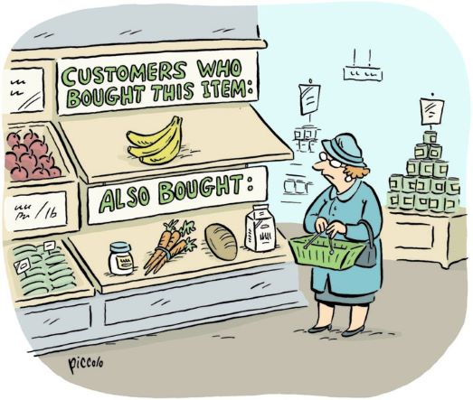

Performed an Exploratory Analysis of the Tokyo Olympics, this project was done in Python.
The Olympics happens after every four years and had never been postponed, yet this olympics made history by being the first time modern olympics to be postponed by a year rather than cancelled due to the COVID-19 pandemic.
This made the Tokyo olympics unique since it happened amid the global pandemic and showcased several technological advancements from AI-driven systems for analyzing athletes performance, robot assistants, and advanced broadcasting technology.

Ukraine and Russia have been going toe-to-toe on the world stage, trading barbs, sanctions, and strongly-worded letters like a couple of rival boxers in a press conference "Manny Pacquiao Vs Floyd Mayweather". But instead of gloves, they're armed with sarcasm and memes. Who needs nukes when you've got Twitter? Of course, no war would be complete without propaganda, and Ukraine and Russia are masters of the art.To get more context on the war between Ukraine and Russia, I Performed a Sentiment analysis on twitter on the war between Ukraine and Russia to get peoples' opinion on the war.

Covid-19 did have us on the edge. In the wake of the new decade and the global pandemic, we had to do more. This will go down in history as the post COVID-19 era and shared to the next generation. To have a better understanding of the impact of the pandemic, I Performed Exploratory analysis using Python on The Covid-19 data from Kaggle to explore the impact of Covid to the Global Economy

Stock Market Shenanigans. First things first, let's talk about those crazy stock symbols. I mean, who comes up with this stuff? AAPL, GOOG, MSFT, AMZN. But hey, everyone wants to windup on the stock market in one way or another.Being part or owning a unicorn is a big deal. So I Performed Predictive Analysis on some technology stocks (Apple, Google, Microsoft, Amazon) with data obtained from Yahoo. This was in a bit to understand which stocks were performing well in the market.
Wait did i just share Cristiano Ronaldo's goals? and added "THE GOAT" at the top! Oh no Messi fan boys are out of luck right now and are switching with facts and figures.Despite the battle for supremacy in the field, behind the scenes it a whole different story - one filled with banters, memes, and moments that'll have you rolling on the floor laughing. In all that i performed Exploratory Analysis to have an overview of Cristiano Ronaldo's football career, he is consider the GOAT in the age of MESSI vs Cristiano Rivalry. In the analysis we check the number of goals he has scored in all competitions

Picture this: a world where machines think, learn, and occasionally break out into spontaneous dance parties. That's right,we're diving headfirst into the madcap universe of AI and machine learning. Things we only saw in sci-fi movies like "The Matrix", quoted "We live in a science-fiction age. Yesterday’s fantasy is already today’s fact.
There’s nothing to be learned from history any more. We’re in science fiction now". where the only limit is your imagination (and maybe a few lines of code) .In a bit to understand Trip Advisor I Performed Exploratory Analysis on trip advisor's data set and built a recommender system for TripAdvisor Website based on the user reviews.

Did you know that Netflix at some point was competing with Blockbuster? But then Blockbusters filed for bankruptcy protection in 2010. This left Netflix as a pioneer in the streaming space. The company grew from a small DVD rental store to a thriving streaming service, with over 100 million subscribers. So what actually led to this growth, even to the level of having an all time highest subscriber count? and stock market share. In a bit to understand Netflix I Performed an EDA on Netflix dataset obtained from kaggle using Python checking top directors, successful actors, trend of production over the years and a sentiment analysis on netflix content.